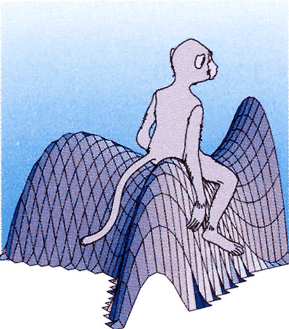

3 Surfaces
Definition 1: Topology of \(\mathbb{R}^n\)
The Euclidean norm on \(\mathbb{R}^n\) is denoted by \[ \| \mathbf{x}\| := \sqrt{ \sum_{i=1}^n x_i^2 }\,, \quad \mathbf{x}= (x_1 , \ldots, x_n) \in \mathbb{R}^n \,. \] Define the Euclidean distance \(d(\mathbf{x},\mathbf{y}) = \| \mathbf{x}- \mathbf{y}\|\).
The pair \((\mathbb{R}^n,d)\) is a metric space.
The topology induced by the metric \(d\) is called the Euclidean topology, denoted by \(\mathcal{T}\).
A set \(U \subseteq \mathbb{R}^n\) is open if for all \(\mathbf{x}\in U\) there exists \(\varepsilon>0\) such that \(B_{\varepsilon}(\mathbf{x}) \subseteq U\), where \[ B_{\varepsilon}(\mathbf{x}) := \{ \mathbf{y}\in \mathbb{R}^n \, \colon \,\| \mathbf{x}- \mathbf{y}\| < \varepsilon\} \] is the open ball of radius \(\varepsilon>0\) centered at \(\mathbf{x}\). We write \(U \in \mathcal{T}\), with \(\mathcal{T}\) the Euclidean topology in \(\mathbb{R}^n\).
A set \(V \subseteq \mathbb{R}^n\) is closed if \(V^c := \mathbb{R}^n \smallsetminus U\) is open.
Definition 2: Subspace Topology
Definition 3: Continuous Function
Theorem 4: Continuity: Topological definition
Definition 5: Homeomorphism
Let \(f \colon U \subseteq \mathbb{R}^n \to V \subseteq \mathbb{R}^m\) with \(U,V\) open. We say that \(f\) is a homeomorphism if:
- \(f\) is continuous;
- \(f\) admits continuous inverse \(f^{-1} \colon V \to U\).
Definition 6: Differentiable Function
Definition 7: Partial Derivative
Definition 8: Jacobian Matrix
Proposition 9: Matrix representation of \(d_{\mathbf{x}} f\)
Definition 10: Diffeomorphism
Let \(f \colon U \to V\), with \(U,V \subseteq \mathbb{R}^n\) open. We say that \(f\) is a diffeomorphism between \(U\) and \(V\) if:
- \(f\) is smooth,
- \(f\) admits smooth inverse \(f^{-1} \colon V \to U\).
Definition 11: Local diffeomorphism
\(f \colon \mathbb{R}^n \to \mathbb{R}^n\) is a local diffeomorphism at \(\mathbf{x}_0 \in \mathbb{R}^n\) if:
- There exists an open set \(U \subseteq \mathbb{R}^n\) such that \(\mathbf{x}_0 \in U\),
- There exists an open set \(V \subseteq \mathbb{R}^n\) such that \(f(\mathbf{x}_0) \in V\),
- \(f \colon U \to V\) is a diffeomorphism.
Proposition 12
Proposition 13: Necessary condition for being diffeomorphism
Theorem 14: Inverse Function Theorem
Let \(f \colon U \to \mathbb{R}^n\) with \(U \subseteq \mathbb{R}^n\) open, \(f\) smooth. Assume \[ \det J f(\mathbf{x}_0) \neq 0 \,, \] for some \(\mathbf{x}_0 \in U\). Then:
- There exists an open set \(U_0 \subseteq U\) such that \(\mathbf{x}_0 \in U_0\),
- There exists an open set \(V\) such that \(f(\mathbf{x}_0) \in V\),
- \(f \colon U_0 \to V\) is a diffeomorphism.
Example 15: A local diffeomorphism which is not global
Prove \(f\) is a local diffeomorphism but not a diffeomorphism.
Solution. \(f\) is a local diffeomorphism at each point \((x,y) \in \mathbb{R}^2\) by the Inverse Function Theorem, since \[\begin{align*} & J f (x,y) = e^x \left( \begin{array}{cc} \cos(y) & \sin(y) \\ -\sin(y) & \cos(y) \end{array} \right) \\ & \det Jf(x,y) = e^{2x} \neq 0 \,. \end{align*}\] However, \(f\) is not invertible because it is not injective, since \[ f(x,y) = f(x, y + 2n\pi) \,, \quad \forall\, (x,y) \in \mathbb{R}^2 , \, n \in \mathbb{N}\,. \] Hence, \(f\) cannot be a diffeomorphism of \(\mathbb{R}^2\) into \(\mathbb{R}^2\).
3.1 Regular Surfaces
Definition 16: Surface
- \(\mathbf{p}\in {\pmb{\sigma}}(U)\),
- \({\pmb{\sigma}}(U)\) is open in \(\mathcal{S}\),
- \({\pmb{\sigma}}\) is a homeomorphism between \(U\) and \({\pmb{\sigma}}(U)\).
\({\pmb{\sigma}}\) is called a surface chart at \(\mathbf{p}\).
Definition 17: Atlas of a surface
Definition 18: Regular Chart
Definition 19: Regular surface
Let \(\mathcal{S}\) be a surface. We say that:
- \(\mathcal{A}\) is a regular atlas if any \({\pmb{\sigma}}\) in \(\mathcal{A}\) is regular.
- \(\mathcal{S}\) is a regular surface if it admits a regular atlas.
Theorem 20: Characterization of regular charts
Let \({\pmb{\sigma}}\colon U \to \mathbb{R}^3\) with \(U \subseteq \mathbb{R}^2\) open. They are equivalent:
- \({\pmb{\sigma}}\) is a regular chart.
- \(d_{\mathbf{x}} {\pmb{\sigma}}\colon \mathbb{R}^2 \to \mathbb{R}^3\) is injective for all \(\mathbf{x}\in U\).
- The Jacobian matrix \(J {\pmb{\sigma}}\) has rank \(2\) for all \((u,v) \in U\).
- \({\pmb{\sigma}}_u \times {\pmb{\sigma}}_v \neq 0\) for all \((u,v) \in U\).
Example 21: Unit cylinder
Solution. The map \({\pmb{\sigma}}\) is regular because \[\begin{align*} {\pmb{\sigma}}_u = (-\sin(u),\cos(u),0) \,, \quad {\pmb{\sigma}}_v = (0,0,1) \,, \end{align*}\] are linearly independent, since the last components of \({{\pmb{\sigma}}}_{u}\) and \({{\pmb{\sigma}}}_{v}\) are \(0\) and \(1\). Therefore, also \({\pmb{\sigma}}_1\) and \({\pmb{\sigma}}_2\) are regular charts, being restrictions of \({\pmb{\sigma}}\). Thus, \(\mathcal{A}\) is a regular atlas and \(\mathcal{S}\) a regular surface.
Example 22: Graph of a function
Solution. The Jacobian matrix of \({\pmb{\sigma}}\) is \[ J{\pmb{\sigma}}(u,v) = \left( \begin{array}{ccc} 1 & 0 \\ 0 & 1 \\ f_u & f_v \\ \end{array} \right) \,. \] \(J{\pmb{\sigma}}\) has rank 2, because the first minor is the \(2 \times 2\) identity matrix. Therefore, \({\pmb{\sigma}}\) is regular. This implies \(\mathcal{A}\) is a regular atlas, and \(\mathcal{S}\) is a regular surface.
Definition 23: Spherical coordinates
Example 24: Unit sphere in spherical coordinates
Solution. The chart \({\pmb{\sigma}}\) is regular because \[\begin{align*} & {\pmb{\sigma}}_{\theta} = (-\sin(\theta) \cos(\varphi), \cos(\theta) \cos(\varphi), 0 ) \\ & {\pmb{\sigma}}_{\varphi} = ( - \cos(\theta) \sin(\varphi), -\sin(\theta) \sin(\varphi), \cos(\varphi) ) \\ & {\pmb{\sigma}}_{\theta} \times {\pmb{\sigma}}_{\varphi} = ( \cos(\theta) \cos^2(\varphi), \sin(\theta) \cos^2(\varphi), \cos(\varphi)\sin(\varphi) ) \\ & \| {\pmb{\sigma}}_{\theta} \times {\pmb{\sigma}}_{\varphi} \| = |\cos (\varphi)| = \cos (\varphi) \neq 0 \,, \end{align*}\] where we used that \(\cos(\phi)>0\), since \(\varphi\in (-\pi/2,\pi/2)\).
Example 25: A non-regular chart
Solution. We have \[ {\pmb{\sigma}}_v = (0,2v,3v^2) \,, \qquad {\pmb{\sigma}}_v(u,0) = (0,0,0) \,. \] \({\pmb{\sigma}}\) is not regular because \({\pmb{\sigma}}_u\) and \({\pmb{\sigma}}_v\) are linearly dependent along the line \(L = \{ (u,0) \, \colon \,u \in \mathbb{R}\}\).
Definition 26: Reparametrization
Theorem 27: Reparametrizations of regular charts are regular
Definition 28: Transition map
Theorem 29
Theorem 30: Transition maps are reparametrizations
3.2 Smooth maps and tangent plane
Definition 31: Smooth functions between surfaces
Let \(\mathcal{S}_1\) and \(\mathcal{S}_2\) be regular surfaces and \(f \colon \mathcal{S}_1 \to \mathcal{S}_2\) a map.
\(f\) is smooth at \(\mathbf{p}\in \mathcal{S}_1\), if there exist charts \[ {\pmb{\sigma}}_i \colon U_i \to \mathcal{S}_i \,\, \text{such that} \,\, \mathbf{p}\in {\pmb{\sigma}}_1(U_1)\,, \, f(\mathbf{p}) \in {\pmb{\sigma}}_2(U_2) \,, \] and that the following map is smooth \[ \Psi \colon U_1 \to U_2 \,, \quad \Psi = {\pmb{\sigma}}_2^{-1} \circ f \circ {\pmb{\sigma}}_1 \,. \]
\(f\) is smooth, if it is smooth for each \(\mathbf{p}\in \mathcal{S}_1\).
Proposition 32: Inverse of a regular chart is smooth
Definition 33: Diffeomorphism of surfaces
Let \(\mathcal{S}_1\) and \(\mathcal{S}_2\) be regular surfaces.
\(f \colon \mathcal{S}_1 \to \mathcal{S}_2\) is a diffeomorphism, if \(f\) is smooth and admits smooth inverse.
\(\mathcal{S}_1\), \(\mathcal{S}_2\) are diffeomorphic if there exists \(f \colon \mathcal{S}_1 \to \mathcal{S}_2\) diffeomorphism.
Proposition 34: Image of charts under diffeomorphisms
Definition 35: Local diffeomorphism
Let \(\mathcal{S}_1\) and \(\mathcal{S}_2\) be regular surfaces, and \(f \colon \mathcal{S}_1 \to \mathcal{S}_2\) smooth.
\(f\) is a local diffeomorphism at \(\mathbf{p}\in \mathcal{S}_1\) if:
- There exists An open set \(V \subseteq \mathcal{S}_1\) with \(\mathbf{p}\in V\);
- \(f(V) \subseteq \mathcal{S}_2\) is open;
- \(f \colon V \to f(V)\) is smooth between surfaces.
\(f\) is a local diffeomorphism in \(\mathcal{S}_1\), if it is a local diffeomorphism at each \(\mathbf{p}\in \mathcal{S}_1\).
\(\mathcal{S}_1\) is locally diffeomorphic to \(\mathcal{S}_2\), if for all \(\mathbf{p}\in \mathcal{S}_1\) there exists \(f\) local diffeomorphism at \(\mathbf{p}\).
Definition 36: Tangent vectors and tangent plane
Let \(\mathcal{S}\) be a surface and \(\mathbf{p}\in \mathcal{S}\).
\(\mathbf{v}\in \mathbb{R}^3\) is a tangent vector to \(\mathcal{S}\) at \(\mathbf{p}\), if there exists a smooth curve \({\pmb{\gamma}}\colon (-\varepsilon,\varepsilon) \to \mathbb{R}^3\) such that \[ {\pmb{\gamma}}(-\varepsilon, \varepsilon) \subseteq \mathcal{S}\,, \quad {\pmb{\gamma}}(0) = \mathbf{p}\,, \quad \mathbf{v}= \dot{{\pmb{\gamma}}}(0) \,. \]
The tangent plane of \(\mathcal{S}\) at \(\mathbf{p}\) is the set \[ T_{\mathbf{p}} \mathcal{S}:= \{ \mathbf{v}\in \mathbb{R}^3 \, \colon \,\mathbf{v}\, \mbox{ tangent vector of } \, \mathcal{S}\, \mbox{ at } \, \mathbf{p}\} \,. \]
Lemma 37: Curves with values on surfaces
Theorem 38: Characterization of Tangent Plane
Theorem 39: Equation of tangent plane
Example 40: Calculation of tangent plane
Question. For \(u \in (0,2\pi)\), \(v < 1\), let \(\mathcal{S}\) charted by \[ {\pmb{\sigma}}(u,v) = \left( \sqrt{1-v} \cos(u) , \sqrt{1-v} \sin(u), v \right) \,. \]
Prove that \({\pmb{\sigma}}\) charts the paraboloid \(x^2 + y^2 - z = 1\).
Prove that \({\pmb{\sigma}}\) is regular and compute \(\mathbf{n}= {{\pmb{\sigma}}}_{u}\times {{\pmb{\sigma}}}_{v}\).
Give a basis for \(T_{\mathbf{p}} \mathcal{S}\) at \(\mathbf{p}= (\sqrt2/2, \sqrt2/2, 0)\).
Compute the cartesian equation of \(T_{\mathbf{p}} \mathcal{S}\).
Solution.
Denote \({\pmb{\sigma}}(u,v) = (x,y,z)\). We have \[\begin{align*} x^2 + y^2 & = \left( \sqrt{1-v} \cos(u) \right)^2 + \left( \sqrt{1-v} \sin(u) \right)^2 \\ & = 1 - v = 1 - z \,. \end{align*}\]
We compute \(\mathbf{n}= {{\pmb{\sigma}}}_{u}\times {{\pmb{\sigma}}}_{v}\) and show that \({\pmb{\sigma}}\) is regular: \[\begin{align*} & {\pmb{\sigma}}_u = \left( - \sqrt{1-v} \sin(u) , \sqrt{1-v} \cos(u), 0 \right) \\ & {\pmb{\sigma}}_v = \left( - \frac{1}{2} (1-v)^{-1/2} \cos(u) , -\frac{1}{2} (1-v)^{-1/2} \sin(u), 1 \right) \\ & \mathbf{n}= {\pmb{\sigma}}_u \times {\pmb{\sigma}}_v = \left( \sqrt{1-v} \cos(u) , \sqrt{1-v} \sin(u), \frac12 \right) \neq {\pmb{0}} \end{align*}\]
Notice that \({\pmb{\sigma}}\left( \pi/4, 0 \right) = \mathbf{p}\). A basis for \(T_{\mathbf{p}} \mathcal{S}\) is \[\begin{align*} {\pmb{\sigma}}_u \left( \frac{\pi}{4}, 0 \right) & = \left( - \frac{\sqrt{2}}{2} , \frac{\sqrt{2}}{2} , 0 \right)\,, \\ {\pmb{\sigma}}_v \left( \frac{\pi}{4}, 0 \right) & = \left( - \frac{\sqrt{2}}{4} , - \frac{\sqrt{2}}{4} , 1 \right) \,. \end{align*}\]
Using the calculation for \(\mathbf{n}\) in Point 2, we find \[ \mathbf{n}\left( \frac{\pi}{4}, 0 \right) = \left( \frac{\sqrt 2}{2}, \frac{\sqrt 2}{2} , -\frac{1}{2} \right) \,. \] The equation for \(T_{\mathbf{p}} \mathcal{S}\) is \(\mathbf{x}\cdot \mathbf{n}= 0\), which reads \[ \sqrt{2} \, x + \sqrt{2} \, y - z = 0 \,. \]
Definition 41: Standard unit normal of a chart
Example 42: Calculation of \(\mathbf{N}\)
Solution. The standard unit normal to \({\pmb{\sigma}}\) is \[\begin{align*} & {\pmb{\sigma}}_{u} =\left(e^{u}, 1,0\right) \,, \,\, {\pmb{\sigma}}_{v} =(0,1,1) \,, & & \left\| {\pmb{\sigma}}_u \times {\pmb{\sigma}}_v \right\| = \sqrt{1+2 e^{2 u}}\\ & {\pmb{\sigma}}_{u} \times {\pmb{\sigma}}_{v} = \left(1,-e^{u}, e^{u}\right) & & \mathbf{N}_{{\pmb{\sigma}}} = \frac{\left(1,-e^{u}, e^{u}\right)}{\sqrt{1+2 e^{2 u}}} \end{align*}\]
Definition 43: Unit normal of a surface
Definition 44: Orientable surface
Definition 45: Differential of smooth function
Example 46: Computing \(d_{\mathbf{p}}f\) using the definition
Question. Consider the plane \(\mathcal{S}= \{z=0\}\), the unit cylinder \(\widetilde{\mathcal{S}} = \{ x^2 + y^2 = 1 \}\), and the map \[ f \colon S \to \widetilde{\mathcal{S}} \,, \qquad f(x,y,0) = (\cos x , \sin x, y) \,. \]
- Compute \(T_{\mathbf{p}}\mathcal{S}\).
- Compute \(d_{\mathbf{p}}f\) at \(\mathbf{p}= (u_0,v_0,0)\) and \(\mathbf{v}= (\lambda,\mu,0)\).
Solution.
A chart for \(\mathcal{S}\) is given by \({\pmb{\sigma}}(u,v) = (u,v,0)\). Hence, \[ {\pmb{\sigma}}_u = (1,0,0) \,, \quad {\pmb{\sigma}}_v = (0,1,0) \,, \] and the tangent space is \[ T_{\mathbf{p}} \mathcal{S}= \operatorname{span} \{ {\pmb{\sigma}}_u,{\pmb{\sigma}}_v \} = \{ (\lambda,\mu,0) \, \colon \, \lambda,\mu \in \mathbb{R}\} \,. \]
Define the curve \({\pmb{\gamma}}\colon (-\varepsilon,\varepsilon) \to \mathcal{S}\) by setting \[ {\pmb{\gamma}}(t) := {\pmb{\sigma}}(u_0 + t \lambda, v_0 + t \mu ) = (u_0 + t \lambda, v_0 + t \mu, 0)\,. \] Note that \({\pmb{\gamma}}(0) = \mathbf{p}\) and \(\dot{{\pmb{\gamma}}}(0) = \mathbf{v}= (\lambda,\mu,0)\). Therefore, the differential is given by \[\begin{align*} & (f \circ {\pmb{\gamma}}) (t) = ( \cos(u_0 + t \lambda), \sin(u_0 + t \lambda),v_0 + t \mu ) \,,\\ & (f \circ {\pmb{\gamma}})' (t) = (- \lambda \sin (u_0 + t\lambda), \lambda \cos (u_0 + t \lambda), \mu) \,, \\ & d_{\mathbf{p}} f (\mathbf{v}) = (f \circ {\pmb{\gamma}})' (0) = (- \lambda \sin (u_0), \lambda \cos (u_0), \mu) \,. \end{align*}\]
Theorem 47: Matrix of \(d_{\mathbf{p}}f\)
Let \(\mathcal{S},\widetilde{\mathcal{S}}\) be regular surfaces, and \(f \colon \mathcal{S}\to \widetilde{\mathcal{S}}\) smooth.
\(d_{\mathbf{p}}f (\mathbf{v})\) depends only on \(f, \mathbf{p},\mathbf{v}\) (and not on \({\pmb{\gamma}}\)).
\(d_{\mathbf{p}} f\) is linear, that is, for all \(\mathbf{v},\mathbf{w}\in T_{\mathbf{p}} \mathcal{S}\) and \(\lambda,\mu \in \mathbb{R}\) \[ d_{\mathbf{p}}f (\lambda \mathbf{v}+ \mu \mathbf{w}) = \lambda d_{\mathbf{p}}f (\mathbf{v}) + \mu d_{\mathbf{p}}f (\mathbf{w}) \,. \]
Let \({\pmb{\sigma}}\colon U \to \mathcal{S}\), \(\widetilde{{\pmb{\sigma}}} \colon \widetilde{U} \to \widetilde{\mathcal{S}}\) be regular charts at \(\mathbf{p}\), \(f(\mathbf{p})\). Let \(\alpha\) and \(\beta\) be the components of \(\Psi = \widetilde{{\pmb{\sigma}}}^{-1} \circ f \circ {\pmb{\sigma}}\), so that \[ \widetilde{{\pmb{\sigma}}} ( \alpha(u,v) , \beta(u,v) ) = f({\pmb{\sigma}}(u,v)) \,, \quad \forall \, (u,v) \in U \,. \] The matrix of \(d_{\mathbf{p}}f\) with respect to the basis \[ \{ {\pmb{\sigma}}_u , {\pmb{\sigma}}_v \} \,\, \mbox{ on } \,\, T_{\mathbf{p}} \mathcal{S}\,, \quad \{ \widetilde{{\pmb{\sigma}}}_{\tilde{u}} , \widetilde{{\pmb{\sigma}}}_{\tilde{v}} \} \,\, \mbox{ on } \,\, T_{f(\mathbf{p})} \widetilde{\mathcal{S}} \,, \] is given by the Jacobian of the map \(\Psi\), that is, \[ J\Psi = \left( \begin{array}{cc} \alpha_u & \alpha_v \\ \beta_u & \beta_v \\ \end{array} \right) \,. \]
Example 48: Computing the matrix of \(d_{\mathbf{p}}f\)
Solution. Note that \(\widetilde{{\pmb{\sigma}}}^{-1} (u,v,0) =(u,v)\). Hence, \[\begin{align*} \Psi(u,v) & = \widetilde{{\pmb{\sigma}}}^{-1} \left( f({\pmb{\sigma}}(u,v)) \right) = \widetilde{{\pmb{\sigma}}}^{-1} \left( f(\cos u, \sin u, v ) \right) \\ & = \widetilde{{\pmb{\sigma}}}^{-1} \left( \sin (u), \cos (u) v, 0 \right) = \left( \sin (u), \cos (u) v \right) \,. \end{align*}\] The components of \(\Psi\) are \[ \alpha(u,v) = \sin(u)\,, \quad \beta (u,v) = \cos (u) v \,. \] The matrix of \(d_{\mathbf{p}}f\) is hence \[ J\Psi = \left( \begin{array}{cc} \alpha_u & \alpha_v \\ \beta_u & \beta_v \\ \end{array} \right) = \left( \begin{array}{cc} \cos (u) & 0 \\ -\sin (u) v & \cos(u) \\ \end{array} \right) \,. \]
3.3 Examples of Surfaces
Definition 49: Level surface
Theorem 50: Regularity of level surfaces
Example 51: Circular cone
Solution. Define the open set \(V \subset \mathbb{R}^3\) and \(f \colon V \to \mathbb{R}\) by \[ V = \{ (x,y,z) \in \mathbb{R}^3 \, \colon \,z > 0 \} \,, \quad f(x,y,z) = x^2 + y^2 - z^2 \,. \] \(\mathcal{S}\) is a regular surface, since \(\mathcal{S}= \mathcal{S}_f\) and \[ \nabla f (x,y,z) = ( 2x, 2y, -2z ) \neq {\pmb{0}}\,, \quad \forall \, (x,y,z) \in V \,. \]
Theorem 52: Tangent plane of level surfaces
Example 53: Unit cylinder
Question. Consider the unit cylinder \(\mathcal{S}= \{ x^2 + y^2 = 1 \}\).
- Prove that \(\mathcal{S}\) is a regular surface.
- Find the equation of \(T_{\mathbf{p}} \mathcal{S}\) at \(\mathbf{p}= \left( \sqrt{2}/2,\sqrt{2}/2,5 \right)\).
Solution.
Define the open set \(V \subseteq \mathbb{R}^3\) and \(f \colon V \to \mathbb{R}\) by \[ V = \mathbb{R}^3 \smallsetminus \{ (0,0,z) \, \colon \,z \in \mathbb{R}\} \,, \quad f(x,y,z) := x^2 + y^2 -1 \,. \] \(\mathcal{S}\) is a regular surface, since \(\mathcal{S}= \mathcal{S}_f\) and \[ \nabla f (x,y,z) = ( 2x, 2y, 0 ) \neq {\pmb{0}}\,, \quad \forall \, (x,y,z) \in V \,. \]
Using the expression for \(\nabla f\) in Point 1, we get \[ \nabla f (\mathbf{p}) = \nabla f \left( \frac{\sqrt{2}}{2},\frac{\sqrt{2}}{2},5 \right) = (\sqrt{2},\sqrt{2},0) \,. \] The equation for \(T_{\mathbf{p}} \mathcal{S}\) is \[ \nabla f (\mathbf{p}) \cdot \mathbf{x}= 0 \,\, \iff \,\, x + y = 0 \,. \]
Definition 54: Ruled surface
\({\pmb{\gamma}}\) is the base curve and the lines \(v \mapsto v \mathbf{a}(u)\) the rulings.
Theorem 55: Regularity of ruled surfaces
Example 56: Unit Cylinder is ruled surface
Solution. The unit cylinder \(\mathcal{S}\) is charted by \[\begin{align*} & {\pmb{\sigma}}(u,v) = (\cos(u), \sin(u),v ) = {\pmb{\gamma}}(u) + v \mathbf{a}(u) \\ & {\pmb{\gamma}}(u) = (\cos(u), \sin(u),0 ) \,, \quad \mathbf{a} = (0,0,1) \end{align*}\] \(\mathcal{S}\) is a ruled surface, since the vectors \[ \dot{{\pmb{\gamma}}}= (-\sin(u), \cos(u), 0 ) \,, \quad \mathbf{a} = (0,0,1) \] are orthogonal, and hence linearly independent.
Example 57: A ruled surface
Solution. We can rearrange \[ x^{2}+10 x y+16 x^{2}-z =0 \, \iff \, (x+8 y)(x+2 y) = z \,. \] Let \(u=x+8 y\) and \(v=x+2 y\). Therefore \(u v=z\) and \[ u-v =6 y \, \implies \, y=\frac{u-v}{6} \, \implies \, x =u-8 y =\frac{4 v-u}{3} \,. \] It follows that if \((x, y, z) \in S\) then \[ \begin{aligned} (x, y, z) & =\left(\frac{4 v-u}{3}, \frac{u-v}{6}, u v\right) \\ & =\left(-\frac{u}{3}, \frac{u}{6}, 0\right)+v\left(\frac{4}{3},-\frac{1}{6}, u\right) = {\pmb{\gamma}}(u) + v \mathbf{a}(u) \,. \end{aligned} \] When \(u \neq 0\), the vectors \[ \mathbf{a}(u) =\left(\frac{4}{3},-\frac{1}{6}, u\right) \,, \quad \dot{{\pmb{\gamma}}}(u) = \left(-\frac13,\frac16,0 \right) \,, \] are linearly independent, as the last component of \(\dot{{\pmb{\gamma}}}(u)\) is \(0\). Also \(\mathbf{a}(0)\) and \(\dot{{\pmb{\gamma}}}(0)\) are linearly independent. Thus, \(\mathcal{S}\) is a ruled surface.
Definition 58: Surface of revolution
Theorem 59: Regularity of surfaces of revolution
Example 60: Catenoid is surface of revolution
Solution. Note that \(f>0\). \(\mathcal{S}\) is regular because \({\pmb{\gamma}}\) is regular, as \[ \dot{{\pmb{\gamma}}}= \left( \sinh (v), 0 , 1 \right) \,, \quad \left\| \dot{{\pmb{\gamma}}} \right\|^2 = 1+ \sinh(v)^2 \geq 1 \,. \]
3.4 First fundamental form
Definition 61: First fundamental form (FFF)
Definition 62: Coordinate functions on tangent plane
Definition 63: FFF of a chart
Theorem 64: Matrix of FFF
Example 65: FFF of Unit cylinder
Solution. We have \[\begin{align*} & {\pmb{\sigma}}_u = (-\sin(u),\cos(u), 0 ) & \, & F = {\pmb{\sigma}}_u \cdot {\pmb{\sigma}}_v = 0 \\ & {\pmb{\sigma}}_v = (0,0,1) & \, & G = {\pmb{\sigma}}_v \cdot {\pmb{\sigma}}_v = 1 \\ & E = {\pmb{\sigma}}_u \cdot {\pmb{\sigma}}_u = 1 & \, & \mathscr{F}_1 = du^2 + dv^2 \end{align*}\]
Proposition 66: FFF and reparametrizations
Example 67: FFF of Plane
Question. Let \(\mathbf{a}, \mathbf{p}, \mathbf{q} \in \mathbb{R}^3\), with \(\mathbf{p}\), \(\mathbf{q}\) orthonormal. The plane in cartesian and polar coordinates is charted by, respectively, \[\begin{align*} & {\pmb{\sigma}}(u,v) = \mathbf{a} + u \mathbf{p}+ v \mathbf{q} \,, \quad (u,v) \in \mathbb{R}^2 \,, \\ & \widetilde{{\pmb{\sigma}}}(\rho,\theta) = \mathbf{a} + \rho \cos(\theta) \mathbf{p}+ \rho \sin(\theta) \mathbf{q} \,, \quad \rho>0 , \, \theta \in (0,2\pi) \,. \end{align*}\]
Show that the FFF of \({\pmb{\sigma}}\) and \(\widetilde{{\pmb{\sigma}}}\) are \[ \mathscr{F}_1 = du^2 + dv^2 \,, \qquad {\widetilde{\mathscr{F}}}_1 = d\rho^2 + \rho^2 d\theta^2 \,. \]
Let \(\Phi\) be the change of variables from polar to cartesian coordinates. Show that \[ {\widetilde{\mathscr{F}}}_1 = (J \Phi)^T \, {\mathscr{F}}_1 \, J \Phi \,. \]
Solution.
Using that \(\mathbf{p}\) and \(\mathbf{q}\) are orthonormal, \[\begin{align*} & {\pmb{\sigma}}_u = \mathbf{p}\,, && \widetilde{{\pmb{\sigma}}}_{\rho} = \cos(\theta)\mathbf{p}+ \sin(\theta) \mathbf{q} \\ & {\pmb{\sigma}}_v = \mathbf{q} & \, & \widetilde{{\pmb{\sigma}}}_{\theta} = - \rho \sin(\theta) \mathbf{p}+ \rho \cos(\theta) \mathbf{q} \\ & E = {\pmb{\sigma}}_u \cdot {\pmb{\sigma}}_u = 1 & \, & \widetilde{E}= \widetilde{{\pmb{\sigma}}}_{\rho} \cdot \widetilde{{\pmb{\sigma}}}_{\rho} = 1 \\ & F = {\pmb{\sigma}}_u \cdot {\pmb{\sigma}}_v = 0 & \, & \widetilde{F}= \widetilde{{\pmb{\sigma}}}_{\rho} \cdot \widetilde{{\pmb{\sigma}}}_{\theta} = 0 \\ & G = {\pmb{\sigma}}_v \cdot {\pmb{\sigma}}_v = 1 & \, & \widetilde{G}= \widetilde{{\pmb{\sigma}}}_{\theta} \cdot \widetilde{{\pmb{\sigma}}}_{\theta} = r^2 \\ & \mathscr{F}_1 = du^2 + dv^2 & \, & {\widetilde{\mathscr{F}}}_1 = d{\rho}^2 + {\rho}^2 d\theta^2 \end{align*}\]
We have \(\Phi({\rho},\theta) = ( {\rho} \cos(\theta), {\rho} \sin (\theta) )\). Then \[\begin{align*} (J \Phi)^T & \, \mathscr{F}_1 J \Phi = (J \Phi)^T \, J \Phi \\ & = \left( \begin{array}{cc} \cos(\theta) & \sin(\theta) \\ -\rho \sin(\theta) & \rho \cos(\theta) \end{array} \right) \left( \begin{array}{cc} \cos(\theta) & - \rho \sin(\theta) \\ \sin(\theta) & \rho \cos(\theta) \end{array} \right) \\ &= \left( \begin{array}{cc} 1 & 0 \\ 0 & \rho^2 \end{array} \right) = \widetilde{\mathscr{F}}_1 \,. \end{align*}\]
3.5 Length of curves
Proposition 68: Length of curves and FFF
Example 69: Curves on the Cone
Question. Consider the cone with chart \[ {\pmb{\sigma}}(u,v)=(\cos(u) v, \sin (u) v, v) \,, \quad u \in (0,2\pi),\, v > 0 \,. \]
Compute the first fundamental form of \({\pmb{\sigma}}\).
Compute the length of \({\pmb{\gamma}}(t)= {\pmb{\sigma}}(t,t)\) for \(t \in (\pi/2,\pi)\).
Solution.
The first fundamental form of \({\pmb{\sigma}}\) is \[\begin{align*} & {\pmb{\sigma}}_u = (- \sin(u)v, \cos(u)v,0) &\,& F = {\pmb{\sigma}}_u \cdot {\pmb{\sigma}}_v = 0 \\ & {\pmb{\sigma}}_v = (\cos(u), \sin (u), 1) &\,& G = {\pmb{\sigma}}_v \cdot {\pmb{\sigma}}_v = 2 \\ & E = {\pmb{\sigma}}_u \cdot {\pmb{\sigma}}_u = v^2 & \, & \mathscr{F}_1 = v^2 \, du^2 + 2 \, dv^2 \end{align*}\]
\({\pmb{\gamma}}(t) = {\pmb{\sigma}}(u(t),v(t))\) with \(u(t) = t\) and \(v(t) = t\). Then \[\begin{align*} & \dot u = 1\,, \,\, \dot v = 1 & & F(u(t),v(t)) = F(t,t) = 0 \\ & E(u(t),v(t)) = E(t,t) = t^2 & & G(u(t),v(t)) = G(t,t) = 2 \end{align*}\] The length of \({\pmb{\gamma}}\) between \(\pi/2\) and \(\pi\) is \[ \int_{\pi/2}^{\pi} \left\| \dot{{\pmb{\gamma}}}(t) \right\| \, dt = \int_{\pi/2}^{\pi} \sqrt{ t^2 + 2 } \, dt \,. \]
3.6 Local isometries
Definition 70: Local isometry
Proposition 71
Theorem 72: Local isometries preserve lengths
Let \(\mathcal{S}, \widetilde{\mathcal{S}}\) be regular surfaces, \(f \colon \mathcal{S}\to \widetilde{\mathcal{S}}\) smooth. Equivalently:
- \(f\) is a local isometry.
- Let \({\pmb{\gamma}}\) be a curve on \(\mathcal{S}\) and define the curve \(\widetilde{{\pmb{\gamma}}}= f \circ {\pmb{\gamma}}\) on \(\widetilde{\mathcal{S}}\). Then \({\pmb{\gamma}}\) and \(\widetilde{{\pmb{\gamma}}}\) have the same length.
Theorem 73: Local isometries preserve FFF
Let \(\mathcal{S}, \widetilde{\mathcal{S}}\) be regular surfaces, \(f \colon \mathcal{S}\to \widetilde{\mathcal{S}}\) smooth. Equivalently:
- \(f\) is a local isometry.
- Let \({\pmb{\sigma}}\colon U \to \mathcal{S}\) be regular chart of \(\mathcal{S}\), and define a chart of \(\widetilde{\mathcal{S}}\) as \(\widetilde{{\pmb{\sigma}}} \colon U \to \widetilde{\mathcal{S}}\), with \(\widetilde{{\pmb{\sigma}}} = f \circ {\pmb{\sigma}}\). Then \({\pmb{\sigma}}\) and \(\widetilde{{\pmb{\sigma}}}\) have the same FFF \[ E = \widetilde{E} \,, \quad F = \widetilde{F} \,, \quad G = \widetilde{G} \,. \]
Theorem 74: Sufficient condition for local isometry
Let \(\mathcal{S}, \widetilde{\mathcal{S}}\) be regular surfaces, with charts \({\pmb{\sigma}}\colon U \to \mathcal{S}\) and \(\widetilde{{\pmb{\sigma}}}\colon U \to \widetilde{\mathcal{S}}\). Assume that \({\pmb{\sigma}}\) and \(\widetilde{{\pmb{\sigma}}}\) have the same FFF. We have
- The surfaces \({\pmb{\sigma}}(U)\) and \(\widetilde{\mathcal{S}}\) are locally isometric.
- A local isometry is given by \[ f \colon {\pmb{\sigma}}(U) \to \widetilde{\mathcal{S}}\,, \qquad f = \widetilde{{\pmb{\sigma}}}\circ {\pmb{\sigma}}^{-1} \,. \]
Example 75: Plane and Cylinder are locally isometric
Solution. The plane \(\mathcal{S}\) is charted by \[ {\pmb{\sigma}}(u,v) = (0,u,v) \,, \quad u,v \in \mathbb{R}\,. \] We already know that \({\pmb{\sigma}}\) is regular, with FFF coefficients \[ E = 1 \,, \,\, F = 0 \,, \,\, G = 1 \quad \implies \quad \mathscr{F}_1 = du^2 + dv^2 \,. \] Define \(\widetilde{{\pmb{\sigma}}}= f \circ {\pmb{\sigma}}\). Therefore, \[ \widetilde{{\pmb{\sigma}}}(u,v) = f(0,u,v) = (\cos(u),\sin(u),v) \,. \] The FFF of \(\widetilde{{\pmb{\sigma}}}\) is \[\begin{align*} & {\widetilde{{\pmb{\sigma}}}}_{u}= ( -\sin(u),\cos(u),0 ) & \, & \widetilde{F}= {\widetilde{{\pmb{\sigma}}}}_{u}\cdot {\widetilde{{\pmb{\sigma}}}}_{v}= 0 \\ & {\widetilde{{\pmb{\sigma}}}}_{v}= (0,0,1) & \, & \widetilde{G}= {\widetilde{{\pmb{\sigma}}}}_{v}\cdot {\widetilde{{\pmb{\sigma}}}}_{v}= 1\\ & \widetilde{E}= {\widetilde{{\pmb{\sigma}}}}_{u}\cdot {\widetilde{{\pmb{\sigma}}}}_{u}= 1 & \, & \widetilde{\mathscr{F}}_1 = du^2 + dv^2 \end{align*}\] Thus, \({\pmb{\sigma}}\) and \(\widetilde{{\pmb{\sigma}}}\) have the same FFF. Since \(\mathcal{A} = \{{\pmb{\sigma}}\}\) is an atlas for \(\mathcal{S}\), by Theorem 74 we conclude that \(f\) is a local isometry of \(\mathcal{S}\) into \(\widetilde{\mathcal{S}}\).
Example 76: Plane and Cone are locally isometric
Question. Consider the cone without tip \[ \mathcal{S}= \{ (x,y,z) \in \mathbb{R}^3 \, \colon \, x^2 + y^2 = z^2 \,, \,\, z > 0 \} \,, \] and the plane \(\widetilde{\mathcal{S}}= \{ z = 0 \}\).
Compute the FFF of the chart of the Cone \[\begin{align*} & {\pmb{\sigma}}\colon U \to \mathcal{S}\,, \qquad {\pmb{\sigma}}(\rho,\theta) = (\rho \cos(\theta), \rho \sin(\theta), \rho ) \,, \\ & U = \left\{ (\rho,\theta) \in \mathbb{R}^2 \, \colon \, \rho > 0 , \, \theta \in (0,2\pi) \right\} \,. \end{align*}\]
Compute the FFF of the chart of the plane \[ \widetilde{{\pmb{\sigma}}}\colon U \to \widetilde{\mathcal{S}}\,, \qquad \widetilde{{\pmb{\sigma}}}(\rho,\theta) = (a\rho \cos(b\theta), a\rho \sin(b\theta), 0 ) \,, \] where \(a>0\) and \(b \in (0,1]\) are constants.
Prove that \(f = \widetilde{{\pmb{\sigma}}}\circ {\pmb{\sigma}}^{-1}\) is a local isometry between \(\mathcal{S}\) and \(\widetilde{\mathcal{S}}\), for suitable coefficients \(a,b\).
Solution.
As seen in Example 71, the coefficients of the FFF of \({\pmb{\sigma}}\) are \[ E = 2 \,, \qquad F = 0 \,, \qquad G = \rho^2 \,. \]
Note that \(\widetilde{{\pmb{\sigma}}}\) is well defined for all \((\rho,\theta) \in U\), as \[ \theta \in (0,2\pi), \quad b \in (0,1] \quad \implies \quad b \theta \in (0,2\pi) \,. \] The coefficients of the FFF of \(\widetilde{{\pmb{\sigma}}}\) are \[\begin{align*} & {\widetilde{{\pmb{\sigma}}}}_{\rho} = a \ ( \cos(b\theta), \sin(b\theta), 0 ) && \widetilde{F}= {\widetilde{{\pmb{\sigma}}}}_{\rho} \cdot {\widetilde{{\pmb{\sigma}}}}_{\theta} = 0\\ & {\widetilde{{\pmb{\sigma}}}}_{\theta} = ab \rho \ ( - \sin(b \theta), \cos(b\theta), 0 ) && \widetilde{G}= {\widetilde{{\pmb{\sigma}}}}_{\theta} \cdot {\widetilde{{\pmb{\sigma}}}}_{\theta} = a^2b^2 \rho^2 \\ & \widetilde{E}= {\widetilde{{\pmb{\sigma}}}}_{\rho} \cdot {\widetilde{{\pmb{\sigma}}}}_{\rho} = a^2 \end{align*}\]
Imposing that \(\widetilde{E}= E\), \(\widetilde{F}= F\) and \(\widetilde{G}= G\), we obtain \[ a^2 = 2 , \,\, a^2b^2 = 1 \quad \implies \quad a = \sqrt{2} \,, \,\, b = \frac{1}{\sqrt{2}} \,. \] Note that \(a>0\) and \(0<b<1\), showing that \(a,b\) are admissible. Hence, for \(a = \sqrt{2}\) and \(b = 1/\sqrt{2}\), the charts \({\pmb{\sigma}}\) and \(\widetilde{{\pmb{\sigma}}}\) have the same FFF. By Theorem 73, we conclude that \(\mathcal{S}\) and \(\widetilde{\mathcal{S}}\) are locally isometric, with local isometry given by \(f = \widetilde{{\pmb{\sigma}}}\circ {\pmb{\sigma}}^{-1}\).
3.7 Angle between curves
Definition 77: Angle between curves
Theorem 78: Angle between curves and FFF
Example 79: Calculation of angle between curves
Question. Let \(S\) be a surface charted by \[ {\pmb{\sigma}}(u, v) = \left(u, v, e^{u v}\right) \,. \]
- Calculate the FFF of \({\pmb{\sigma}}\).
- Calculate \(\cos (\theta)\), where \(\theta\) is the angle between the two curves \[\begin{align*} {\pmb{\gamma}}(t) & ={\pmb{\sigma}}(u(t), v(t)), \quad u(t)=t,\, v(t)=t \,, \\ \widetilde{{\pmb{\gamma}}}(t) & = {\pmb{\sigma}}( \tilde{u}(t),\tilde{v}(t) ) \,, \quad \tilde{u}(t) = 1 , \, \tilde{v}(t) = t \,. \end{align*}\]
Solution.
The coefficients of the FFF are \[\begin{align*} & {\pmb{\sigma}}_u = \left(1,0, e^{u v} v\right) &\,& F(u,v) = e^{2 u v} u v \\ & {\pmb{\sigma}}_v=\left(0,1, e^{u v} u\right) & \, & G(u,v) = 1+e^{2 u v} u^2 \\ & E(u,v) =1+e^{2 u v} v^2 \end{align*}\]
\({\pmb{\gamma}}\) and \(\widetilde{{\pmb{\gamma}}}\) intersect at \({\pmb{\gamma}}(1)=\widetilde{{\pmb{\gamma}}}(1)={\pmb{\sigma}}(1,1)\). We compute \[\begin{align*} & \dot{u}(1) = 1 &\,& E(1,1) = 1+e^2 \\ & \dot{v}(1)=1 &\,& F(1,1) =e^2 \\ & \dot{\tilde{u}}(1)=0 &\,& G(1,1) =1+e^2 \\ & \dot{\tilde{v}}(1) = 1 \end{align*}\] Therefore, the angle \(\theta\) satisfies \[ \cos (\theta) =\frac{1+2 e^2}{\sqrt{2+4 e^2} \sqrt{1+e^2}}=\sqrt{\frac{1+2 e^2}{2+2 e^2}} \,. \]
3.8 Conformal maps
Definition 80: Conformal map
- \(\theta\) is the angle between \(\mathbf{v}\) and \(\mathbf{w}\),
- \(\widetilde{\theta}\) is the angle between \(d_{\mathbf{p}} f(\mathbf{v})\) and \(d_{\mathbf{p}} f(\mathbf{w})\).
In this case, we say that \(\mathcal{S}\) and \(\widetilde{\mathcal{S}}\) are conformal.
Proposition 81
Theorem 82: Conformal maps and FFF
Let \(\mathcal{S}\), \(\widetilde{\mathcal{S}}\) be regular surfaces, \(f \colon \mathcal{S}\to \widetilde{\mathcal{S}}\) a local diffeomorphism. Equivalently:
\(f\) is a conformal map.
Let \({\pmb{\sigma}}\colon U \to \mathcal{S}\) be regular chart of \(\mathcal{S}\), and define a chart of \(\widetilde{\mathcal{S}}\) as \(\widetilde{{\pmb{\sigma}}} \colon U \to \widetilde{\mathcal{S}}\), with \(\widetilde{{\pmb{\sigma}}} = f \circ {\pmb{\sigma}}\). Then the FFF of \({\pmb{\sigma}}\) and \(\widetilde{{\pmb{\sigma}}}\) satisfy \[ \widetilde{\mathscr{F}}_1 = \lambda (u,v) \mathscr{F}_1 \,, \quad \forall \, (u,v) \in U \,, \] for some smooth map \(\lambda \colon U \to \mathbb{R}\).
Theorem 83: Sufficient condition for conformality
Let \(\mathcal{S}, \widetilde{\mathcal{S}}\) be regular surfaces, with charts \({\pmb{\sigma}}\colon U \to \mathcal{S}\) and \(\widetilde{{\pmb{\sigma}}}\colon U \to \widetilde{\mathcal{S}}\). Assume that \(\widetilde{\mathscr{F}}_1 = \lambda \mathscr{F}_1\) for some \(\lambda \colon U \to \mathbb{R}\). We have
- The surfaces \({\pmb{\sigma}}(U)\) and \(\widetilde{\mathcal{S}}\) are conformal.
- A conformal map is given by \(f \colon {\pmb{\sigma}}(U) \to \widetilde{\mathcal{S}}\) with \(f = \widetilde{{\pmb{\sigma}}}\circ {\pmb{\sigma}}^{-1}\).
Example 84: Stereographic Projection
Solution. It is easy to prove that \(f^{-1} = {\pmb{\sigma}}\), with \[ {\pmb{\sigma}}(u,v) =\left( \frac{2u}{u^2+v^2+1}, \frac{2v}{u^2+v^2+1} , 1-\frac{2}{u^2+v^2+1}\right) \,. \] It is straightforward to compute that the FFF of \({\pmb{\sigma}}\) is \[ \mathscr{F}_1 = \lambda(u,v) (du^2 + dv^2) \,, \quad \lambda(u,v) = \frac{4}{(u^2+v^2+1)^2} \,. \] Let \(\widetilde{{\pmb{\sigma}}}= f \circ {\pmb{\sigma}}\). Since \({\pmb{\sigma}}= f^{-1}\), we have that \(\widetilde{{\pmb{\sigma}}}(u,v) = (u,v,0)\). As already computed, the FFF of \(\widetilde{{\pmb{\sigma}}}\) is \({\widetilde{\mathscr{F}}}_1 = du^2 + dv^2\). Therefore, \[ {\widetilde{\mathscr{F}}}_1 = \frac{1}{\lambda} {\mathscr{F}}_1 \,. \] Since \(\mathcal{A} = \{{\pmb{\sigma}}\}\) is an atlas for \(\mathcal{S}\), by Theorem 82 we conclude that \(f\) is a conformal map.
Definition 85: Conformal parametrization
Example 86: Mercator projection
Solution. Recall the identities \({\mathop{\mathrm{sech}}}^2 (v) + {\tanh}^2 (v) = 1\) and \[\begin{align*} & \mathop{\mathrm{sech}}(v)' = - \mathop{\mathrm{sech}}(v) \tanh (v) \,, \qquad \tanh (v)' = {\mathop{\mathrm{sech}}}^2 (v) \,. \end{align*}\] The chart \({\pmb{\sigma}}\) is a conformal parametrization because the FFF is \[\begin{align*} & \widetilde{{\pmb{\sigma}}}_u = \mathop{\mathrm{sech}}(v) \, ( -\sin(u) , \cos(u), 0 ) \\ & \widetilde{{\pmb{\sigma}}}_v = \mathop{\mathrm{sech}}(v) \, ( -\cos(v) \tanh(v) , -\sin(u) \tanh(v) , \mathop{\mathrm{sech}}(v) ) \\ & \widetilde{E} = \widetilde{{\pmb{\sigma}}}_u \cdot \widetilde{{\pmb{\sigma}}}_u = {\mathop{\mathrm{sech}}}^2(v) (\cos^2(u) + \sin^2(u)) = {\mathop{\mathrm{sech}}}^2(v) \\ & \widetilde{F} = \widetilde{{\pmb{\sigma}}}_u \cdot \widetilde{{\pmb{\sigma}}}_v = 0 \\ & \widetilde{G} = \widetilde{{\pmb{\sigma}}}_v \cdot \widetilde{{\pmb{\sigma}}}_v = {\mathop{\mathrm{sech}}}^2(v) ({\tanh}^2(v) + {\mathop{\mathrm{sech}}}^2(v)) = {\mathop{\mathrm{sech}}}^2(v) \\ & {\mathscr{F}}_1 = {\mathop{\mathrm{sech}}}^2(v) \, \left( du^2 + dv^2 \right) \,. \end{align*}\]
Theorem 87: Conformal parametrizations preserve angles
3.9 Second fundamental form
Definition 88: Second fundamental form of a chart
Example 89: SFF of Plane
Solution. We have that \(\mathscr{F}_2 = 0\), since \[\begin{gather*} {\pmb{\sigma}}_u = \mathbf{p}\,, \quad {\pmb{\sigma}}_v = \mathbf{q} \,, \quad {\pmb{\sigma}}_{uu} = {\pmb{\sigma}}_{uv} = {\pmb{\sigma}}_{vv} = {\pmb{0}}\,, \\ L = {\pmb{\sigma}}_{uu} \cdot \mathbf{N}= 0 \,, \quad M = {\pmb{\sigma}}_{uv} \cdot \mathbf{N}= 0 \,, \quad N = {\pmb{\sigma}}_{vv} \cdot \mathbf{N}= 0 \,. \end{gather*}\]
Example 90: SFF of Unit cylinder
Solution. We have \[\begin{align*} & {\pmb{\sigma}}_u = (-\sin(u),\cos(u), 0 ) &\,& \mathbf{N}= \frac{{\pmb{\sigma}}_u \times {\pmb{\sigma}}_v}{ \left\| {\pmb{\sigma}}_u \times {\pmb{\sigma}}_v \right\| } \\ & {\pmb{\sigma}}_v = (0,0,1) &\,& \, \quad = (\cos(u), \sin(u),0) \\ & {\pmb{\sigma}}_{uu} = (-\cos(u), - \sin(u), 0 ) &\,& L = {\pmb{\sigma}}_{uu} \cdot \mathbf{N}= - 1 \\ & {\pmb{\sigma}}_{uv} = {\pmb{\sigma}}_{vv} = {\pmb{0}} &\,& M = {\pmb{\sigma}}_{uv} \cdot \mathbf{N}= 0 \\ & {\pmb{\sigma}}_u \times {\pmb{\sigma}}_v = (\cos(u), \sin(u),0) &\,& N = {\pmb{\sigma}}_{vv} \cdot \mathbf{N}= 0 \\ & \left\| {\pmb{\sigma}}_u \times {\pmb{\sigma}}_v \right\| = 1 &\,&\mathscr{F}_2 = - du^2 \end{align*}\]
Remark 91: SFF and reparametrizations
3.10 Gauss and Weingarten maps
Definition 92: Gauss map
Definition 93: Weingarten map
Lemma 94
Definition 95: SFF of a surface
Theorem 96: Matrix of the SFF
\[ II_{\mathbf{p}} (\mathbf{v},\mathbf{w}) = (du (\mathbf{v}), dv(\mathbf{v}) ) \, \left( \begin{array}{cc} L & M \\ M & N \end{array} \right) \, (du(\mathbf{w}) , dv(\mathbf{w}))^T \,, \] for all \(\mathbf{v},\mathbf{w}\in T_{\mathbf{p}} \mathcal{S}\). In particular, it holds \[ \mathscr{F}_2 (\mathbf{v}) = {II}_{\mathbf{p}} (\mathbf{v},\mathbf{v}) \,, \quad \forall \, \mathbf{v}\in T_{\mathbf{p}} \mathcal{S}\,. \]
Theorem 97: Matrix of Weingarten map
Remark 98: Matrix inverse
Example 99: Weingarten map of Helicoid
Solution. We compute all the derivatives of \({\pmb{\sigma}}\) \[\begin{align*} & {\pmb{\sigma}}_u = ( \cos(v), \sin(v), 0 ) &\,& {\pmb{\sigma}}_{uv} = (- \sin(v), \cos(v), 0 ) \\ & {\pmb{\sigma}}_v = ( - u \sin(v), u \cos(v), \lambda ) &\,& {\pmb{\sigma}}_{vv} = -u \, ( \cos(v), \sin(v), 0 ) \\ & {\pmb{\sigma}}_{uu} = ( 0, 0, 0 ) \end{align*}\] The FFF and its inverse are \[\begin{align*} & E = {\pmb{\sigma}}_u \cdot {\pmb{\sigma}}_u = 1 &\,& F = {\pmb{\sigma}}_u \cdot {\pmb{\sigma}}_v = 0 \\ & G = {\pmb{\sigma}}_v \cdot {\pmb{\sigma}}_v = u^2 + \lambda^2 \\ & \mathscr{F}_1 = \left( \begin{array}{cc} 1 & 0 \\ 0 & u^2 + \lambda^2 \end{array} \right) &\,& \mathscr{F}_1^{-1} = \left( \begin{array}{cc} 1 & 0 \\ 0 & \dfrac{1}{u^2 + \lambda^2} \end{array} \right) \,. \end{align*}\] The standard unit normal to \({\pmb{\sigma}}\) is \[\begin{align*} & {\pmb{\sigma}}_u \times {\pmb{\sigma}}_v = (\lambda \sin (v), - \lambda \cos(v), u) \\ & \left\| {\pmb{\sigma}}_u \times {\pmb{\sigma}}_v \right\| = \sqrt{u^2 + \lambda^2} \\ & \mathbf{N}= \frac{ {\pmb{\sigma}}_u \times {\pmb{\sigma}}_v }{ \left\| {\pmb{\sigma}}_u \times {\pmb{\sigma}}_v \right\| } = \frac{1}{\sqrt{u^2 + \lambda^2}} \, (\lambda \sin(v), -\lambda \cos(v), u) \,. \end{align*}\] The SFF of \({\pmb{\sigma}}\) is \[\begin{align*} L & = {\pmb{\sigma}}_{uu} \cdot \mathbf{N}= 0 \qquad \qquad M = {\pmb{\sigma}}_{uv} \cdot \mathbf{N}= - \frac{\lambda}{\sqrt{u^2 + \lambda^2}} \\ N & = {\pmb{\sigma}}_{vv} \cdot \mathbf{N}= 0 \\ \mathscr{F}_2 & = \left( \begin{array}{cc} 0 & - \dfrac{\lambda}{\sqrt{u^2 + \lambda^2}} \\ -\dfrac{\lambda}{\sqrt{u^2 + \lambda^2}} & 0 \end{array} \right) \,. \end{align*}\] Finally, the matrix of the Weingarten map is \[\begin{align*} \mathcal{W}= \mathscr{F}_1^{-1} \mathscr{F}_2 = \left( \begin{array}{cc} 0 & - \dfrac{\lambda}{(u^2 + \lambda^2)^{1/2}} \\ -\dfrac{\lambda}{(u^2 + \lambda^2)^{3/2}} & 0 \end{array} \right) \,. \end{align*}\]
3.11 Curvatures
Definition 100: Gaussian and mean curvature
Let \(\mathcal{S}\) be an orientable surface. Let \(\mathcal{W}\) be the matrix of the Weingarten map \(\mathcal{W}_{\mathbf{p},\mathcal{S}}\) of \(\mathcal{S}\) at \(\mathbf{p}\). We define:
The Gaussian curvature of \(\mathcal{S}\) at \(\mathbf{p}\) is \[ K := \det (\mathcal{W}) \,, \]
The mean curvature of \(\mathcal{S}\) at \(\mathbf{p}\) is \[ H := \frac12 \, \operatorname{Tr} (\mathcal{W}) \,, \]
Notation 101: Trace of a matrix
Proposition 102: Formulas for \(K\) and \(H\)
Example 103: Curvatures of the Plane
Question. Let \(\mathbf{a}, \mathbf{p}, \mathbf{q} \in \mathbb{R}^3\), with \(\mathbf{p}\), \(\mathbf{q}\) orthonormal. Consider the plane charted by \[ {\pmb{\sigma}}(u,v) = \mathbf{a} + \mathbf{p}u + \mathbf{q} v \,. \]
- Compute the matrix of the Weingarten map of \({\pmb{\sigma}}\).
- Compute the Gaussian and mean curvatures of the plane.
Solution.
From Examples 68, 89, the FFF and SFF of \({\pmb{\sigma}}\) are \[ \mathscr{F}_1 = \left( \begin{array}{cc} 1 & 0 \\ 0 & 1 \end{array} \right) \,, \quad \mathscr{F}_2 = \left( \begin{array}{cc} 0 & 0 \\ 0 & 0 \end{array} \right) \,. \] Therefore the matrix of the Weingarten map is \[ \mathcal{W}= \mathscr{F}_1^{-1} \mathscr{F}_2 = \left( \begin{array}{cc} 0 & 0 \\ 0 & 0 \end{array} \right) \,. \]
The Gaussian and mean curvatures are \[ K = \det (\mathcal{W}) = 0 \,, \qquad H = \frac12 \, \operatorname{Tr} (\mathcal{W}) = 0 \,. \]
Example 104: Curvatures of the Unit cylinder
Question. Consider the unit cylinder \(\mathcal{S}\) charted by \[ {\pmb{\sigma}}(u,v) = (\cos(u), \sin(u), v) \,. \]
- Compute the matrix of the Weingarten map of \({\pmb{\sigma}}\).
- Compute the Gaussian and mean curvatures of \(\mathcal{S}\).
Solution.
From Examples 66, 90, the FFF and SFF of \({\pmb{\sigma}}\) are \[ \mathscr{F}_1 = \left( \begin{array}{cc} 1 & 0 \\ 0 & 1 \end{array} \right) \,, \quad \mathscr{F}_2 = \left( \begin{array}{cc} -1 & 0 \\ 0 & 0 \end{array} \right) \,. \] Therefore the matrix of the Weingarten map is \[ \mathcal{W}= \mathscr{F}_1^{-1} \mathscr{F}_2 = \left( \begin{array}{cc} -1 & 0 \\ 0 & 0 \end{array} \right) \,. \]
The Gaussian and mean curvatures are \[ K = \det (\mathcal{W}) = 0 \,, \qquad H = \frac12 \, \operatorname{Tr} (\mathcal{W}) = - \frac12 \,. \]
Theorem 105: Eigenvalues of Weingarten map
Let \(\mathcal{S}\) be an orientable surface and \({\pmb{\sigma}}\) a regular chart at \(\mathbf{p}\). Let \(\mathcal{W}\) be the matrix of the Weingarten map \(\mathcal{W}_{\mathbf{p},\mathcal{S}}\) with respect to the basis \(\{{\pmb{\sigma}}_u,{\pmb{\sigma}}_v\}\) of \(T_{\mathbf{p}}\mathcal{S}\). Then
There exist scalars \(\kappa_1, \kappa_2 \in \mathbb{R}\) and an orthonormal basis \(\{\mathbf{t}_1,\mathbf{t}_2\}\) of \(T_{\mathbf{p}} \mathcal{S}\) such that \[ \mathcal{W}_{\mathbf{p},\mathcal{S}} (\mathbf{t}_1) = \kappa_1 \mathbf{t}_1 \,, \quad \mathcal{W}_{\mathbf{p},\mathcal{S}} (\mathbf{t}_2) = \kappa_2 \mathbf{t}_2 \,. \]
Let \(\lambda_1, \lambda_2, \mu_1, \mu_2 \in \mathbb{R}\) be such that \[ \mathbf{t}_1 = \lambda_1 {\pmb{\sigma}}_u + \mu_1 {\pmb{\sigma}}_v \,, \quad \mathbf{t}_2 = \lambda_2 {\pmb{\sigma}}_u + \mu_2 {\pmb{\sigma}}_v \,. \] Denote \(\mathbf{x}_1 = (\lambda_1,\mu_1)\) and \(\mathbf{x}_2 = (\lambda_2,\mu_2)\). Then \(\kappa_1,\kappa_2\) are eingenvalues of \(\mathcal{W}\) of eigenvectors \(\mathbf{x}_1\) and \(\mathbf{x}_2\) \[ \mathcal{W}\mathbf{x}_1 = \kappa_1 \mathbf{x}_1 \,, \quad \mathcal{W}\mathbf{x}_2 = \kappa_2 \mathbf{x}_2 \,. \] In particular, the matrix \(\mathcal{W}\) is diagonalizable, with \[ \mathcal{W}= P^{-1} D P , \quad D = \left( \begin{array}{cc} \kappa_1 & 0 \\ 0 & \kappa_2 \end{array} \right) \,, \quad P = \left( \begin{array}{cc} \lambda_1 & \lambda_2 \\ \mu_1 & \mu_2 \end{array} \right) \,. \]
Definition 106: Principal curvatures and vectors
Let \(\mathcal{S}\) be an orientable surface. Let \(\mathcal{W}_{\mathbf{p},\mathcal{S}}\) the Weingarten map of \(\mathcal{S}\) at \(\mathbf{p}\). We define:
The principal curvatures of \(\mathcal{S}\) at \(\mathbf{p}\) are the eigenvalues \(\kappa_1, \kappa_2\) of \(\mathcal{W}_{\mathbf{p},\mathcal{S}}\).
The principal vectors corresponding to \(\kappa_1\) and \(\kappa_2\) are the eigenvectors \(\mathbf{t_1}, \mathbf{t}_2\) of \(\mathcal{W}_{\mathbf{p},\mathcal{S}}\).
Remark 107: Computing principal curvatures and vectors
Let \({\pmb{\sigma}}\colon U \to \mathbb{R}^3\) be a regular chart and \(\mathcal{S}= {\pmb{\sigma}}(U)\).
Compute the FFF and SFF of \({\pmb{\sigma}}\), and the matrix of the Weingarten map \[ \mathcal{W}= \mathscr{F}_{1}^{-1} \mathscr{F}_2 \,. \]
Compute the eigenvalues of \(\mathcal{W}\), by solving for \(\lambda\) the equation \[ \det(\mathcal{W}- \lambda I) = 0 \,. \] The two solutions are the principal curvatures \(\kappa_1\) and \(\kappa_2\).
Find scalars \(\lambda\), \(\mu\) which solve the linear system \[ (\mathcal{W}- \kappa_i I) \left( \begin{array}{c} \lambda \\ \mu \end{array} \right) = 0 \,. \] The solution(s) gives the eigenvector(s) of \(\mathcal{W}\) \[ \mathbf{x}_i = (\lambda,\mu) \] corresponding to the eigenvalue \(\kappa_i\).
The principal vector(s) associated to \(\kappa_i\) is
\[ \mathbf{t}_i = \lambda {\pmb{\sigma}}_u + \mu {\pmb{\sigma}}_v \]
Remark 108: The case of \(\mathcal{W}\) diagonal
Proposition 109: Relationships between curvatures
Example 110: Principal curvatures of Unit Cylinder
Solution. By Example 105, the matrix of the Weingarten map is \[ \mathcal{W}= \left( \begin{array}{cc} -1 & 0 \\ 0 & 0 \end{array} \right) \,. \] Since \(\mathcal{W}\) is diagonal, the eigenvalues are the diagonal entries of \(\mathcal{W}\) and the eigenvectors are \[ \mathbf{x}_1 = (1,0), \quad \mathbf{x}_2 = (0,1) \,. \] Therefore, the principal curvatures and principal vectors are \[\begin{align*} & \kappa_1 = - 1 \,, \quad \kappa_2 = 0 \,,\\ & \mathbf{t}_1 = {\pmb{\sigma}}_u = (-\sin(u),\cos(v),0) \,,\\ & \mathbf{t}_2 = {\pmb{\sigma}}_v = (0,0,1)\,. \end{align*}\]
Example 111: Curvatures of Sphere
Solution. Compute the FFF of \({\pmb{\sigma}}\) \[\begin{align*} {\pmb{\sigma}}_u & = (-\sin(u)\cos(v), \cos(u)\cos(v),0) \\ {\pmb{\sigma}}_v & = (-\cos(u)\sin(v), -\sin(u)\sin(v), \cos(v)) \\ E & = {\pmb{\sigma}}_u \cdot {\pmb{\sigma}}_u = \cos^2(v) \\ F & = {\pmb{\sigma}}_u \cdot {\pmb{\sigma}}_v = 0\\ G & = {\pmb{\sigma}}_v \cdot {\pmb{\sigma}}_v = 1 \\ \mathscr{F}_1 & = \left( \begin{array}{cc} \cos^2(v) & 0 \\ 0 & 1 \end{array} \right) \,. \end{align*}\] Moreover \[\begin{align*} {\pmb{\sigma}}_u \times {\pmb{\sigma}}_v & = (\cos(u)\cos^2(v), \sin(u) \cos^2(v), \cos(v)\sin(v)) \\ \| {\pmb{\sigma}}_u \times {\pmb{\sigma}}_v \| & = |\cos(v)| = \cos(v) \,, \end{align*}\] where we used that \(\cos(v)>0\) since \(v \in (-\pi/2,\pi/2)\). Therefore, \[\begin{align*} \mathbf{N}& = (\cos(u) \cos(v), \sin(u)\cos(v), \sin(v) ) \\ {\pmb{\sigma}}_{uu} & = (-\cos(u)\cos(v), -\sin(u)\cos(v), 0 ) \\ {\pmb{\sigma}}_{uv} & = (\sin(u)\sin(v), -\cos(u)\sin(v), 0 ) \\ {\pmb{\sigma}}_{vv} & = (-\cos(u)\cos(v), -\sin(u)\cos(v), -\sin(v) ) \\ L & = {\pmb{\sigma}}_{uu} \cdot \mathbf{N}= \cos^{2}(v) \\ M & ={\pmb{\sigma}}_{uv} \cdot \mathbf{N}= 0 \\ N & = {\pmb{\sigma}}_{vv} \cdot \mathbf{N}= 1 \end{align*}\] Hence, the SFF and matrix of the Weingarten map are \[ \mathscr{F}_2 = \left( \begin{array}{cc} \cos^2(v) & 0 \\ 0 & 1 \end{array} \right) \,, \quad \mathcal{W}= \mathscr{F}_1^{-1} \mathscr{F}_2 = \left( \begin{array}{cc} 1 & 0 \\ 0 & 1 \end{array} \right) \,. \] Since \(\mathcal{W}\) is diagonal, the principal curvatures and vectors are \[ \kappa_1 = \kappa_2 = 1 \,, \quad \mathbf{t}_1 = {\pmb{\sigma}}_u \,, \quad \mathbf{t}_2 = {\pmb{\sigma}}_v \,. \] Finally, the mean and Gaussian curvatures are \[ H = \frac{\kappa_1 + \kappa_2}{2} = 1 \,, \quad K= \kappa_1 \kappa_2 = 1 \,. \]
3.12 Normal and Geodesic curvatures
Definition 112: Darboux frame
Proposition 113: Darboux frame is orthonormal basis
Proposition 114: Coefficients of \(\ddot{{\pmb{\gamma}}}\) in the Darboux frame
Definition 115: Normal and geodesic curvatures
Let \(\mathcal{S}\) be regular and \({\pmb{\gamma}}\colon (a,b) \to \mathcal{S}\) a unit-speed curve. Let \(\mathbf{N}\) bet the standard unit normal to \(\mathcal{S}\).
The normal curvature of \({\pmb{\gamma}}\) is \[ \kappa_n = \ddot{{\pmb{\gamma}}}\cdot \mathbf{N}\,, \]
The geodesic curvature of \({\pmb{\gamma}}\) is \[ \kappa_g = \ddot{{\pmb{\gamma}}}\cdot (\mathbf{N}\times \dot{{\pmb{\gamma}}}) \,. \]
Theorem 116: Computing \(\kappa_n\) with SFF
Let \(\mathcal{S}\) be a regular surface and \({\pmb{\gamma}}\colon (a,b) \to \mathcal{S}\) a unit-speed curve. Denote \(\mathbf{p}:= {\pmb{\gamma}}(t)\). We have:
The normal curvature \(\kappa_n\) satisfies \[ \kappa_n = {II}_{\mathbf{p}} (\dot{{\pmb{\gamma}}}, \dot{{\pmb{\gamma}}}) \,. \]
Let \({\pmb{\sigma}}\) be a chart for \(\mathcal{S}\) at \(\mathbf{p}= {\pmb{\gamma}}(t)\). Then \[ {\pmb{\gamma}}(t)={\pmb{\sigma}}(u(t), v(t)) \] for some smooth functions \(u,v \colon (a,b) \to \mathbb{R}\), and \[ \kappa_{n}=L \dot{u}^{2}+2 M \dot{u} \dot{v}+N \dot{v}^{2} \,, \] where \(L,M,N\) are evaluated at \((u(t),v(t))\), and \(\dot{u},\dot{v}\) at \(t\).
Example 117: Curves on the sphere
Solution. Let \({\pmb{\gamma}}(t)={\pmb{\sigma}}(u(t), v(t))\) be a unit-speed curve on \(\mathbb{S}^2\). Differentiating, we get \[\begin{align*} \dot{{\pmb{\gamma}}}(t) & = \frac{d}{dt} ( \cos(u(t)) \cos(v(t)), \sin(u(t)) \cos(v(t)), \sin(v(t)) ) \\ & = (-\dot{u} \sin (u) \cos (v)-\dot{v} \cos (u) \sin (v), \\ & \qquad \dot{u} \cos (u) \cos (v)- \dot{v} \sin (u) \sin (v),\\ & \qquad \dot{v} \cos (v)) \\ \| \dot{{\pmb{\gamma}}}(t) \|^2 & = \cos^{2}(v) \dot{u}^{2}+\dot{v}^{2} \,. \end{align*}\] Since \({\pmb{\gamma}}\) is unit-speed, we have \(\left\| \dot{{\pmb{\gamma}}} \right\| = 1\). Therefore, \[ \cos^{2}(v) \dot{u}^{2}+\dot{v}^{2} = 1 \,. \] By Example 112, the coefficients of the SFF of \({\pmb{\sigma}}\) are \[ L = \cos^{2}(v), \quad M = 0 , \quad N = 1\,. \] By Theorem 116, the normal curvature of \({\pmb{\gamma}}\) is \[\begin{align*} \kappa_{n} = L \dot{u}^{2}+2 M \dot{u} \dot{v}+N \dot{v}^{2} = \cos^{2}(v) \dot{u}^{2}+\dot{v}^{2} = 1 \,. \end{align*}\]
Theorem 118: Euler’s Theorem
Example 119: Curves on the sphere (again)
Solution. By Example 112, the principal curvatures of the unit sphere are \(\kappa_1 = \kappa_2 = 1\). By Euler’s Theorem, for any unit-speed curve \({\pmb{\gamma}}\) on the sphere we have \[ \kappa_n = \kappa_1 \cos^2(\theta) + \kappa_2 \sin^2(\theta) = \cos^2(\theta) + \sin^2(\theta) =1 \,. \]
Definition 120: \(\kappa_n\) and \(\kappa_g\) for regular \({\pmb{\gamma}}\)
Theorem 121: Formulas for \(\kappa_n\) and \(\kappa_g\)
Let \(\mathcal{S}\) be regular, and \({\pmb{\gamma}}\colon (a,b) \to \mathcal{S}\) a regular curve.
- The normal and geodesic curvatures of \({\pmb{\gamma}}\) are given by
\[ \kappa_n = \frac{\ddot{{\pmb{\gamma}}}\cdot \mathbf{N}}{\left\| \dot{{\pmb{\gamma}}} \right\|^2} \,, \qquad \kappa_g = \frac{ \ddot{{\pmb{\gamma}}}\cdot \left( \mathbf{N}\times \dot{{\pmb{\gamma}}}\right) }{\left\| \dot{{\pmb{\gamma}}} \right\|^3} \,. \]
Denote by \(\kappa\) the curvature of \({\pmb{\gamma}}\). It holds \[ \kappa^2 = \kappa_n^2 + \kappa_g^2 \,. \]
Let \({\pmb{\sigma}}\) be a chart for \(\mathcal{S}\) at \(\mathbf{p}= {\pmb{\gamma}}(t)\). Then \[ {\pmb{\gamma}}(t) = {\pmb{\sigma}}(u(t),v(t)) \] for some smooth functions \(u,v \colon (a,b) \to \mathbb{R}\), and \[ \kappa_n = \frac{II_{\mathbf{p}}(\dot{{\pmb{\gamma}}},\dot{{\pmb{\gamma}}})}{I_{\mathbf{p}}(\dot{{\pmb{\gamma}}},\dot{{\pmb{\gamma}}})} = \frac{L\dot{u}^2 + 2M \dot{u}\dot{v} + N \dot{v}^2}{E\dot{u}^2 + 2F \dot{u}\dot{v} + G \dot{v}^2} \,, \] with \(E,F,G,L,M,N\) evaluated at \((u(t),v(t))\), and \(\dot{u},\dot{v}\) at \(t\).
Example 122: Calculation of normal and geodesic curvatures
Question. For \(v \neq 0\) and \(t \neq 0\), consider the surface chart and curve \[ {\pmb{\sigma}}( u , v ) = \left( u , v, \dfrac{u}{v} \right) \,, \quad {\pmb{\gamma}}( t ) = {\pmb{\sigma}}( t^2 , t ) \,. \]
- Prove that \({\pmb{\sigma}}\) is regular.
- Compute the principal unit normal to \({\pmb{\sigma}}\).
- Prove that \({\pmb{\gamma}}\) is regular.
- Compute the normal and geodesic curvatures of \({\pmb{\gamma}}\).
- Compute \(\kappa\), the curvature of \({\pmb{\gamma}}\). Verify that \[ \kappa^2 = \kappa_n^2 + \kappa_g^2 \,. \]
Solution.
The chart \({\pmb{\sigma}}\) is regular because \[\begin{equation*} \begin{aligned} & {\pmb{\sigma}}_u = \left( 1, 0, \frac{1}{v} \right) \,, \quad {\pmb{\sigma}}_v = \left( 0, 1, -\frac{u}{v^2} \right) \\ & {\pmb{\sigma}}_u \times {\pmb{\sigma}}_v = \left( -\frac{1}{v}, \frac{u}{v^2}, 1 \right) \neq {\pmb{0}} \end{aligned} \end{equation*}\]
The principal unit normal is \[ \begin{aligned} & \left\| {\pmb{\sigma}}_u \times {\pmb{\sigma}}_v \right\| = \dfrac{\left( u^2 + v^2 + v^4 \right)^{1/2}}{v^2} \\ & \mathbf{N}= \frac{{\pmb{\sigma}}_u \times {\pmb{\sigma}}_v }{\left\| {\pmb{\sigma}}_u \times {\pmb{\sigma}}_v \right\| } = \dfrac{\left( -v, u , v^2 \right)}{\left( u^2 + v^2 + v^4 \right)^{1/2}}. \end{aligned} \]
The curve \({\pmb{\gamma}}\) is regular because \[\begin{align*} {\pmb{\gamma}}(t) & = {\pmb{\sigma}}(t^2,t) = (t^2,t,t) \\ \dot{{\pmb{\gamma}}}(t) & = (2t,1,1) \neq {\pmb{0}} \end{align*}\]
Compute the following quantities \[\begin{align*} & \left\| \dot{{\pmb{\gamma}}}(t) \right\| = 2^{1/2} \, (2t^2 +1 )^{1/2} & \, & \ddot{{\pmb{\gamma}}}\cdot \mathbf{N}= - \frac{2}{(2t^2 + 1)^{1/2}} \\ & \ddot{{\pmb{\gamma}}}( t ) = \left( 2, 0, 0 \right) & \, & \mathbf{N}\times \dot{{\pmb{\gamma}}}= \left( 1 + 2t^2 \right)^{1/2} (0, 1, - 1) \\ & \mathbf{N}(t^2,t) = \dfrac{\left( -1, t , t \right)}{\left( 2t^2 + 1\right)^{1/2}} & \, & \ddot{{\pmb{\gamma}}}\cdot \left( \mathbf{N}\times \dot{{\pmb{\gamma}}}\right) = 0 \end{align*}\] The normal and geodesic curvatures are \[\begin{align*} \kappa_n & = \frac{\ddot{{\pmb{\gamma}}}\cdot \mathbf{N}}{\left\| \dot{{\pmb{\gamma}}} \right\|^2} = - \frac{1}{(2t^2 + 1)^{3/2}} \,,\\ \kappa_g & = \frac{\ddot{{\pmb{\gamma}}}\cdot \left( \mathbf{N}\times \dot{{\pmb{\gamma}}}\right)}{\left\| \dot{{\pmb{\gamma}}} \right\|^3} = 0 \,. \end{align*}\]
The curvature of \({\pmb{\gamma}}\) is \[\begin{align*} & \dot{{\pmb{\gamma}}}\times \ddot{{\pmb{\gamma}}}= (0,2,-2) \,, \quad \left\| \dot{{\pmb{\gamma}}}\times \ddot{{\pmb{\gamma}}} \right\| = 2^{3/2} \\ & \kappa = \frac{\left\| \dot{{\pmb{\gamma}}}\times \ddot{{\pmb{\gamma}}} \right\|}{\left\| \dot{{\pmb{\gamma}}} \right\|^3} = \frac{1}{(2t^2 + 1)^{3/2}} \end{align*}\] Thus \(\kappa = - \kappa_n\). Since \(\kappa_g = 0\), we conclude that \(\kappa^2 = \kappa_n^2 + \kappa_g^2\).
3.13 Local shape of a surface
Theorem 123: Local structure of surfaces
Definition 124: Local shape types
Let \(\mathcal{S}\) be a regular surface, with \(\kappa_1(\mathbf{p})\) and \(\kappa_2(\mathbf{p})\) the principal curvatures at \(\mathbf{p}\). The point \(\mathbf{p}\) is
Elliptic if \[ \kappa_1(\mathbf{p}) > 0 \,, \, \kappa_2(\mathbf{p}) > 0 \quad \mbox{ or } \quad \kappa_1(\mathbf{p}) < 0 \,, \, \kappa_2(\mathbf{p}) < 0 \]
Hyperbolic if \[ \kappa_{1}(\mathbf{p})<0<\kappa_{2}(\mathbf{p}) \quad \mbox{ or } \quad \kappa_{2}(\mathbf{p})<0< \kappa_{1}(\mathbf{p}) \]
Parabolic if \[ \kappa_{1}(\mathbf{p})=0 \, , \, \kappa_{2}(\mathbf{p}) \neq 0 \quad \mbox{ or } \quad \kappa_{2}(\mathbf{p}) \neq 0, \, \kappa_{1}(\mathbf{p})=0 \]
Planar if \[ \kappa_{1}(\mathbf{p})=\kappa_{2}(\mathbf{p}) = 0 \]
Proposition 125: Gaussian curvature and local shape
Let \(\mathcal{S}\) be a regular surface, with \(K(\mathbf{p})\) the Gaussian curvature at \(\mathbf{p}\). The point \(\mathbf{p}\) is
Elliptic if \(K(\mathbf{p}) > 0\),
Hyperbolic if \(K(\mathbf{p}) < 0\),
Parabolic or Planar if \(K(\mathbf{p}) = 0\).
Example 126: Analysis of local shape
Question. Consider the surface chart \[ {\pmb{\sigma}}(u, v) = \left(u-v, u+v, u^{2}+v^{2}\right) \,. \]
- Compute the first fundamental form of \({\pmb{\sigma}}\).
- Compute the second fundamental form of \({\pmb{\sigma}}\).
- Compute the matrix of the Weingarten map.
- Show that \(\mathbf{p}= {\pmb{\sigma}}(1,0)\) is an elliptic point.
- Can there be points which are not elliptic?
Solution.
The FFF of \({\pmb{\sigma}}\) is \[\begin{align*} & {\pmb{\sigma}}_{u} =(1,1,2u) &\,& F = {\pmb{\sigma}}_{u} \cdot {\pmb{\sigma}}_v = 4uv \\ & {\pmb{\sigma}}_{v} =(-1,1,2v) &\,&G = {\pmb{\sigma}}_{v} \cdot {\pmb{\sigma}}_v = 2 (1+2v^2) \\ & E = {\pmb{\sigma}}_{u} \cdot {\pmb{\sigma}}_u = 2 (1+2u^2) &\,&\mathscr{F}_{1} = 2\left(\begin{array}{ll} 1 + 2u^2 & 2uv \\ 2uv & 1 + 2v^2 \end{array}\right) \end{align*}\]
The standard unit normal is \[\begin{align*} {\pmb{\sigma}}_{u} \times {\pmb{\sigma}}_{v} & =2(v-u,-u-v, 1) \\ \left\|{\pmb{\sigma}}_{u} \times {\pmb{\sigma}}_{v}\right\| & =2\left( 1 + 2u^2 + 2v^2\right)^{\frac{1}{2}} \\ \mathbf{N}& =\frac{(v-u,-u-v, 1)}{ \left( 1 + 2 u^2 + 2 v^2 \right)^{\frac{1}{2}}} \end{align*}\] The SFF of \({\pmb{\sigma}}\) is \[\begin{align*} & {\pmb{\sigma}}_{u u} =(0,0,2) \qquad \quad L = {\pmb{\sigma}}_{uu} \cdot \mathbf{N}=2 \left( 1 + 2u^{2}+ 2v^{2}\right)^{-\frac{1}{2}} \\ & {\pmb{\sigma}}_{u v} =(0,0,0) \qquad \quad M = {\pmb{\sigma}}_{uv} \cdot \mathbf{N}= 0 \\ & {\pmb{\sigma}}_{v v} =(0,0,2) \qquad \quad N = {\pmb{\sigma}}_{vv} \cdot \mathbf{N}= 2\left(1 + 2u^{2}+ 2v^{2}\right)^{-\frac{1}{2}} \\ & \mathscr{F}_{2} = \left( 1 + 2u^{2}+ 2v^{2}\right)^{-\frac{1}{2}} \, \left(\begin{array}{ll} 1 & 0 \\ 0 & 1 \end{array}\right) \,. \end{align*}\]
The inverse of \(\mathscr{F}_1\) is \[\begin{align*} \mathscr{F}_{1}^{-1} & = \frac{1}{\det (\mathscr{F}_1)} \left( \begin{array}{ll} G & -F \\ -F & E \end{array} \right) \\ & = \frac{1}{2(1 + 2u^2 + 2v^2)} \,\left(\begin{array}{ll} 1 + 2v^2 & -2uv \\ -2uv & 1 + 2u^2 \end{array}\right) \,. \end{align*}\] The matrix of the Weingarten map is \[\begin{align*} \mathcal{W}& = \mathscr{F}_1^{-1} \mathscr{F}_2 \\ & = \frac{1}{(1 + 2u^2 + 2v^2)^{\frac32}} \,\left(\begin{array}{ll} 1 + 2v^2 & -2uv \\ -2uv & 1 + 2u^2 \end{array}\right) \,. \end{align*}\]
For \(u=1\) and \(v=0\) we obtain \[ \mathcal{W} = \frac{1}{3^{\frac32}} \,\left(\begin{array}{ll} 1 & 0 \\ 0 & 3 \end{array}\right) = \left(\begin{array}{ll} 3^{-\frac32} & 0 \\ 0 & 3^{- \frac12} \end{array}\right) \,. \] Therefore the principal curvatures at \(\mathbf{p}\) are \[ \kappa_1(\mathbf{p}) = 3^{-\frac32} > 0 \,, \quad \kappa_2(\mathbf{p}) = 3^{-\frac12} > 0\,. \quad \] Therefore \(\mathbf{p}\) is an elliptic point.
No. This is because the Gaussian curvature is \[ K = \det(\mathcal{W}) = \frac{1}{(1 + 2u^2 + 2v^2)^2} >0\,. \] By Proposition 125 we conclude that every point is elliptic.
3.14 Umbilical points
Definition 127: Umbilical point
Theorem 128: Structure theorem at umbilics
Proposition 129: Criterion for umbilics
Proposition 130: Chart criterion for umbilics
Example 131: Plane and Sphere
If the plane is charted as in Example 103, the FFF and SFF are \[ \mathscr{F}_1 = \left( \begin{array}{cc} 1 & 0 \\ 0 & 1 \end{array} \right) \,, \qquad \mathscr{F}_2 = \left( \begin{array}{cc} 0 & 0 \\ 0 & 0 \end{array} \right) \,. \] Therefore \(\mathscr{F}_2 = \kappa \mathscr{F}_1\) with \(\kappa = 0\), and all points are umbilical.
If the sphere is charted as in Example 112, the FFF and SFF are \[ \mathscr{F}_1 = \mathscr{F}_2 = \left( \begin{array}{cc} \cos^2(v) & 0 \\ 0 & 1 \end{array} \right) \,. \] Since \(\mathscr{F}_2 = \mathscr{F}_1\), all points on the sphere are umbilical.
Remark 132: How to find umbilics
Example 133: Local shape of the Monkey Saddle
Question. Consider the Monkey Saddle surface \(\mathcal{S}\) described by \[ z = x^3 - 3xy^2 \,. \]
- Compute the Gaussian curvature of \(\mathcal{S}\).
- Does \(\mathcal{S}\) contain any hyperbolic point?
- Prove that the origin is the only umbilical point.
Solution. The Monkey Saddle is charted by \[ {\pmb{\sigma}}(u,v) = (u,v, u^3 - 3uv^2) \,. \] The FFF of \({\pmb{\sigma}}\) is \[\begin{align*} & {{\pmb{\sigma}}}_{u}= (1,0,3(u^2 - v^2)) &&F = {{\pmb{\sigma}}}_{u}\cdot {{\pmb{\sigma}}}_{v}= - 18 uv (u^2 - v^2) \\ & {{\pmb{\sigma}}}_{v}= (0,1,-6uv) && G = {{\pmb{\sigma}}}_{v}\cdot {{\pmb{\sigma}}}_{v}= 1 + 36u^2v^2 \\ & E = {{\pmb{\sigma}}}_{u}\cdot {{\pmb{\sigma}}}_{u}= 1 + 9 (u^2 - v^2)^2 \\ \end{align*}\] The SFF of \({\pmb{\sigma}}\) is \[\begin{align*} {{\pmb{\sigma}}}_{u}\times {{\pmb{\sigma}}}_{v}& = (-3(u^2-v^2), 6uv, 1) \\ \left\| {{\pmb{\sigma}}}_{u}\times {{\pmb{\sigma}}}_{v} \right\| & = 1 + 36u^2v^2 + 9 (u^2 - v^2)^2 \\ & = 1 + 9u^4 + 9v^4 + 18u^2v^2 \\ & = 1 + 9 (u^2 + v^2)^2 \\ \mathbf{N}& = \frac{(-3(u^2-v^2), 6uv, 1)}{\sqrt{1 + 9 (u^2 + v^2)^2 }} \\ {\pmb{\sigma}}_{uu} & = (0,0,6u) \\ {\pmb{\sigma}}_{uv} & = (0,0,-6v) \\ {\pmb{\sigma}}_{vv} & = (0,0,-6u) \\ L & = {\pmb{\sigma}}_{uu} \cdot \mathbf{N}= \frac{6u}{\sqrt{1 + 9 (u^2 + v^2)^2 }}\\ M & = {\pmb{\sigma}}_{uv} \cdot \mathbf{N}= \frac{-6v}{\sqrt{1 + 9 (u^2 + v^2)^2 }}\\ N & = {\pmb{\sigma}}_{vv} \cdot \mathbf{N}= \frac{6u}{\sqrt{1 + 9 (u^2 + v^2)^2 }} \end{align*}\]
We have that \[\begin{align*} EG-F^2 & = (1 + 9 (u^2 - v^2)^2)(1 + 36u^2v^2) - (- 18 uv (u^2 - v^2))^2 \\ & = 1 + 36u^2v^2 + 9 (u^2 - v^2)^2 \\ & = 1 + 9u^4 + 9v^4 + 18u^2v^2 \\ & = 1 + 9 (u^2 + v^2)^2 \\ LN-M^2 & = -\frac{36(u^2 + v^2)}{ 1 + 9 (u^2 + v^2)^2 } \end{align*}\] Therefore the Gaussian curvature is \[ K = \frac{LN - M^2}{EG-F^2} = - \frac{36 (u^2 + v^2)}{[1 + 9 (u^2 + v^2)^2]^2} \,. \]
Note that \[ K < 0 \,, \quad \forall \, (u,v) \neq (0,0) \,. \] By Proposition 125, we conclude that all the points outside of the origin are hyperbolic.
Since \(K<0\) everywhere except at the origin, Proposition 129 implies that points outside the origin cannot be umbilic. At \((0,0)\), we have \[ \mathscr{F}_1 = du^2 + dv^2 \,, \quad \mathscr{F}_2 = 0 \,. \] Therefore \(\mathscr{F}_2\) is a multiple of \(\mathscr{F}_1\), and by Proposition 130 we conclude that \((0,0)\) is an umbilical point. Note: the matrix of the Weingarten map is \(\mathcal{W}= \mathscr{F}^{-1}_1 \mathscr{F}_2 = 0\). Therefore the principal curvatures are \(\kappa_1 = \kappa_2 = 0\), showing that \((0,0)\) is a planar point.

Good Luck with the Exam